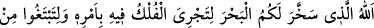
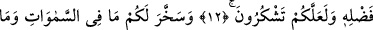
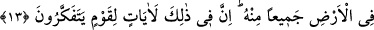
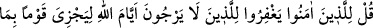
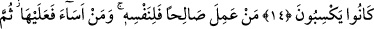
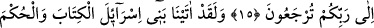
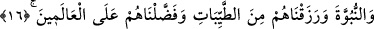
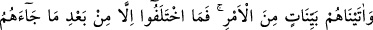
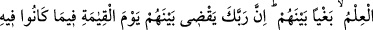
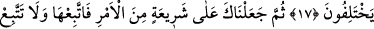
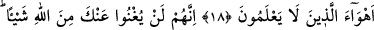
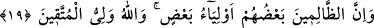
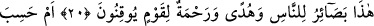
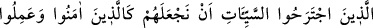
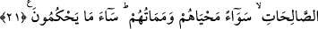
HER TOPLUM
YAPTIĞINA GÖRE
CEZALANDIRILACAKTIR
12. Allah o (yüce) varlıktır ki, emri gereğince içinde gemilerin yüzmesi ve lütfedip
verdiği rızkı aramanız için ve de şükredesiniz diye denizi size hazır hale
getirmiştir.
13. O, göklerde ve yerde ne varsa hepsini, kendi katından (bir lütfu olmak üzere)
size boyun eğdirmiştir. Elbette bunda düşünen bir toplum için ibretler vardır.
14. İmân edenlere söyle: Allah’ın (ceza) günlerinin geleceğini ummayanları
bağışlasınlar. Çünkü Allah her toplumu, yaptığına göre cezalandıracaktır.
15. Kim iyi iş yaparsa faydası kendinedir, kim de kötülük yaparsa zararı yine
kendinedir. Sonra Rabbinize döndürüleceksiniz.
16. Andolsun ki biz, İsrailoğullarına Kitap, hüküm ve peygamberlik verdik. Onları
güzel rızıklarla besledik ve onları dünyalara üstün kıldık.